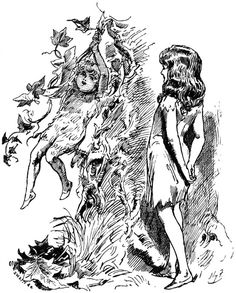

A collection of commonly used routines in Uxntal projects.
The following snippets are in the standard format. If you discover faster and smaller helpers, please get in touch with me.
Hexadecimal Numbers
To print an hexadecimal number:
@<phex> ( short* -: ) SWP /b &b ( byte -: ) DUP #04 SFT /c &c ( byte -: ) #0f AND DUP #09 GTH #27 MUL ADD [ LIT "0 ] ADD #18 DEO JMP2r
To convert an hexadecimal string to a value:
@shex ( str* -: val* )
[ LIT2r 0000 ]
&w ( str* `acc* -: val* )
LDAk chex INC #00 EQU ?{
[ LITr 40 ] SFT2r LDAk chex [ LITr 00 ] STH
ADD2r INC2 LDAk ?&w }
POP2 STH2r JMP2r
To convert an hexadecimal character to a nibble:
@chex ( c -: val! )
( dec ) [ LIT "0 ] SUB DUP #09 GTH ?{ JMP2r }
( hex ) #27 SUB DUP #0f GTH ?{ JMP2r }
( err ) POP #ff JMP2r
Decimal Numbers
To print a decimal short to decimal:
@pdec ( short* -- )
#000a SWP2 [ LITr ff ]
&>get ( -- )
SWP2k DIV2k MUL2 SUB2 STH
POP OVR2 DIV2 ORAk ?&>get
POP2 POP2
&>put ( -- )
STHr INCk ?{ POP JMP2r }
[ LIT "0 ] ADD #18 DEO !&>put
To print a decimal byte to decimal:
@print-dec ( dec -- ) DUP #64 DIV print-num/try DUP #0a DIV print-num/try ( >> ) @print-num ( num -- ) #0a DIVk MUL SUB [ LIT "0 ] ADD #18 DEO JMP2r &try ( num -- ) DUP ?print-num POP JMP2r
To convert a decimal string to a hexadecimal value.
@sdec ( str* -- val* ) [ LIT2r 0000 ] &w ( -- ) ( validate ) LDAk [ LIT "0 ] SUB #09 GTH ?&end ( accumulate ) [ LIT2r 000a ] MUL2r ( combine ) LDAk [ LIT "0 ] SUB [ LITr 00 ] STH ADD2r ( continue ) INC2 LDAk ?&w &end POP2 STH2r JMP2r
Strings
To print a string.
@<pstr> ( str* -: ) LDAk #18 DEO INC2 & LDAk ?<pstr> POP2 JMP2r
Helpers for strings:
[TODO]
Memory
To print an entire page of memory:
@pmem ( addr* -- ) #0000 &l ( -- ) ADD2k LDA phex/b DUP #0f AND #0f NEQ #16 MUL #0a ADD #18 DEO INC NEQk ?&l POP2 POP2 JMP2r
Helpers for memory.
[TODO]
Helpers for bitwise operations.
@popcount ( byte -- count ) LITr 00 #00 &w SFTk #01 AND STH ADDr INC SFTk ?&w POP2 STHr JMP2r @popcnt ( v* -- num ) LITr 00 &>w #01 ANDk STH ADDr SFT2 ORAk ?&>w POP2 STHr JMP2r
Dates
To find the day of the week from a given date, Tomohiko Sakamoto's method:
@dotw ( y* m d -- dotw ) ( y -= m < 3; ) OVR STH SWP2 #00 STHr #02 LTH SUB2 STH2 ( t[m-1] + d ) #00 ROT ;&t ADD2 LDA #00 SWP ROT #00 SWP ADD2 ( y + y/4 - y/100 + y/400 ) STH2kr STH2kr #02 SFT2 ADD2 STH2kr #0064 DIV2 SUB2 STH2r #0190 DIV2 ADD2 ADD2 ( % 7 ) #0007 DIV2k MUL2 SUB2 NIP JMP2r &t [ 00 03 02 05 00 03 05 01 04 06 02 04 ]
To find if a year is a leap year:
@is-leap-year ( year* -- bool ) ( leap year if perfectly divisible by 400 ) DUP2 #0190 ( MOD2 ) DIV2k MUL2 SUB2 #0000 EQU2 ?&leap ( not a leap year if divisible by 100 ) ( but not divisible by 400 ) DUP2 #0064 ( MOD2 ) DIV2k MUL2 SUB2 #0000 EQU2 ?¬-leap ( leap year if not divisible by 100 ) ( but divisible by 4 ) DUP2 #0003 AND2 #0000 EQU2 ?&leap ( all other years are not leap years ) ¬-leap POP2 #00 JMP2r &leap POP2 #01 JMP2r
Memory
@msfl ( b* a* len* -- ) STH2 SWP2 EQU2k ?&end &l ( -- ) DUP2k STH2kr ADD2 LDA ROT ROT STA INC2 GTH2k ?&l POP2 POP2 &end POP2r JMP2r @msfr ( b* a* len* -- ) STH2 EQU2k ?&end &l ( -- ) DUP2 LDAk ROT ROT STH2kr ADD2 STA #0001 SUB2 LTH2k ?&l POP2 POP2 &end POP2r JMP2r
Random
@prng-init ( -- ) [ LIT2 00 -DateTime/second ] DEI [ LIT2 00 -DateTime/minute ] DEI #60 SFT2 EOR2 [ LIT2 00 -DateTime/hour ] DEI #c0 SFT2 EOR2 ,prng/x STR2 [ LIT2 00 -DateTime/hour ] DEI #04 SFT2 [ LIT2 00 -DateTime/day ] DEI #10 SFT2 EOR2 [ LIT2 00 -DateTime/month ] DEI #60 SFT2 EOR2 .DateTime/year DEI2 #a0 SFT2 EOR2 ,prng/y STR2 JMP2r @prng ( -- number* ) [ LIT2 &x $2 ] DUP2 #50 SFT2 EOR2 DUP2 #03 SFT2 EOR2 [ LIT2 &y $2 ] DUP2 ,&x STR2 DUP2 #01 SFT2 EOR2 EOR2 ,&y STR2k POP JMP2r
Misc
To convert a signed byte to a signed short.
DUP #7f GTH #ff MUL SWP
@smax ( x* y* -> smax* ) EOR2k POP #80 AND ?min !max
@min ( x* y* -> min* ) LTH2k JMP SWP2 POP2 JMP2r
@max ( x* y* -> max* ) LTH2k JMP SWP2 NIP2 JMP2r
@mod ( x y -- z ) DIVk MUL SUB JMP2r
@mod2 ( x* y* -- z* ) DIV2k MUL2 SUB2 JMP2r
( Signed macros )
@abs ( a -- b ) DUP #80 LTH ?{ #00 SWP SUB } JMP2r
@abs2 ( a* -- b* ) DUP2k #1f SFT2 MUL2 SUB2 JMP2r
@lts2 ( a* b* -- f ) #8000 STH2k ADD2 SWP2 STH2r ADD2 GTH2 JMP2r
@gts2 ( a* b* -- f ) #8000 STH2k ADD2 SWP2 STH2r ADD2 LTH2 JMP2r
( Binary macros )
@rol ( x y -- z ) DUP #07 SFT SWP #10 SFT ADD JMP2r
@ror ( x y -- z ) DUP #70 SFT SWP #01 SFT ADD JMP2r
@rol2 ( x* y* -- z* ) DUP2 #0f SFT2 SWP2 #10 SFT2 ADD2 JMP2r
@ror2 ( x* y* -- z* ) DUP2 #f0 SFT2 SWP2 #01 SFT2 ADD2 JMP2r
I have reordered time. I have turned the world upside down, and I have done it all for you!
This self-replicating program will emit its own bytecode when run:
@q ( -> ) ;&end ;q &l LDAk #18 DEO INC2 GTH2k ?&l &end
uxnasm src.tal seed.rom && uxncli seed.rom > res.rom
This cyclical self-replicating program will emit a program that prints ying and which emits a program like itself that will print yang, which in turn will emit a program that prints ying again, and so forth:
@y ( -> ) [ LIT2 "y 19 ] DEO [ LIT2 &c "ai ] SWPk ,&c STR2 #19 DEO [ LIT2 "n 19 ] DEO [ LIT2 "g 19 ] DEO ;&end ;y &w LDAk #18 DEO INC2 GTH2k ?&w &end
uxnasm yingyang.tal ying.rom && uxncli ying.rom > yang.rom
This quine program will emit a second program that emits its own bytecode as hexadecimal ascii characters, which is also a valid program source:
a001 32a0 0100 b460 000b a020 1817 2121 aa20 fff2 0004 6000 0006 8004 1f60 0000 800f 1c06 8009 0a80 271a 1880 3018 8018 176c
uxnasm src.tal seed.rom && uxncli seed.rom > src.tal
This ambigram program executes the same backward or forward, every single opcode is evaluated, and prints the palindrome "tenet". It is my entry to BGGP1:
1702 a018 a002 a074 a002 0417 1702 a018 a002 a065 a002 0417 1702 a018 a002 a06e a002 a018 a002 1717 0402 a065 a002 a018 a002 1717 0402 a074 a002 a018 a002 17
uxnasm src.tal turnstile.rom && uxncli turnstile.rom
This self-replicating program produces exactly 1 copy of itself, names the copy "4", does not execute the copied file, and prints the number 4. It is my 19 bytes entry to BGGP4:
|a0 @File &vector $2 &success $2 &stat $2 &delete $1 &append $1 &name $2 &length $2 &read $2 &write $2 |100 [ LIT2 13 -File/length ] DEO2 INC [ LIT2 -&filename -File/name ] DEO2 INC SWP .File/write DEO2 [ LIT2 "4 18 ] DEO &filename "4
uxnasm src.tal seed.rom && uxncli seed.rom
This polyglot program is both a valid tga image, and a valid rom that will print that same image. It is my entry to BGGP2
|20 @Screen &vector $2 &width $2 &height $2 &auto $1 &pad $1 &x $2 &y $2 &addr $2 &pixel $1 &sprite $1 |100 @length [ 40 ] @header [ 01 01 ] @color-map [ 0000 3000 20 ] [ 0000 1000 1000 1000 0820 ] @description $40 @color-map-data [ 0000 00ff ffff ffff $aa !program $b ] @body [ 0101 0101 0101 0100 0001 0101 0101 0101 0101 0101 0101 0000 0000 0101 0101 0101 0101 0101 0100 0000 0000 0001 0101 0101 0101 0101 0100 0101 0101 0001 0101 0101 0101 0101 0100 0101 0101 0001 0101 0101 0101 0101 0100 0001 0100 0001 0101 0101 0101 0101 0101 0001 0100 0101 0101 0101 0101 0101 0000 0101 0101 0000 0101 0101 0101 0100 0101 0101 0101 0101 0001 0101 0101 0100 0100 0101 0101 0101 0001 0101 0101 0100 0100 0101 0101 0001 0001 0101 0101 0100 0101 0001 0101 0001 0001 0101 0101 0101 0001 0001 0100 0100 0101 0101 0101 0100 0100 0001 0100 0001 0001 0101 0101 0001 0101 0101 0101 0101 0100 0101 0101 0000 0000 0000 0000 0000 0000 0101 ] @program ( -> ) ( print 2 ) [ LIT2 "2 18 DEO ] ( | draw tga ) #0010 DUP2 .Screen/width DEO2 .Screen/height DEO2 #0f08 DEOk INC INC DEOk INC INC DEO #0000 &>l ( -- ) DUP2 #0f AND .Screen/x DEO2 DUP2 #04 SFT .Screen/y DEO2 DUP2 ;body ADD2 LDA .Screen/pixel DEO INC DUP ?&>l POP2
uxnasm src.tal mothra.tga && gimp mothra.tga
This program ensnares one into the iconic Commodore 64 maze:
( seed ) #c5 DEI2 ,&seed STR2
[ LIT2 "/\ ] #f800
&>w ( -- )
( break ) DUP #3f AND ?{ #0a18 DEO }
( seed ) OVR2 [ LIT2 &seed &x $1 &y $1 ]
( randx ) ADDk #50 SFT EOR DUP #03 SFT EOR DUP ,&x STR
( randy ) SUBk #01 SFT EOR EOR DUP ,&y STR
( emit ) #01 AND [ LIT POP ] ADD [ #00 STR $1 ] #18 DEO
INC2 ORAk ?&>w
POP2 POP2
uxnasm src.tal res.rom && uxncli res.rom
This program unlocks the scorching power to create COMFROM statements at runtime and prints exclamation marks in an infinite loop:
( 10 ) ;&label COMEFROM
( 20 ) [ LIT2 "! 18 ] DEO
( 30 ) &label $4
( 40 ) BRK
@COMEFROM ( label* -- )
( LIT2 ) STH2k [ LIT LIT2 ] STH2kr STA
( JMP2 ) INC2r INC2r INC2r [ LIT JMP2 ] STH2r STA
( addr* ) STH2kr SWP2 INC2 STA2
JMP2r
uxnasm src.tal res.rom && uxncli res.rom
LITr 00 JSRr